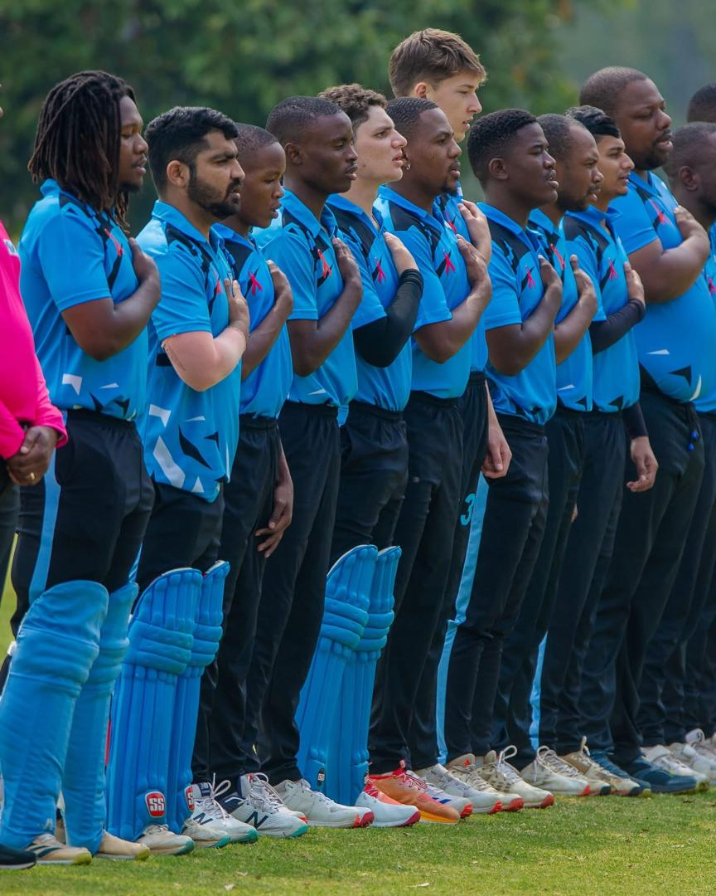

Botswana Cricket Gains Government Backing to Drive Development

Following a strategic discussion with Jacob Kelebeng, Minister of Sport and Arts, the Botswana Cricket Association (BCA) has obtained government backing to address important development issues, such as young participation and infrastructure shortages.
The purpose of the courtesy call, which was attended by Ms. Boineelo Hardy, Deputy Permanent Secretary for Arts, and Vice Chairperson Sumod Damodar of the BCA, was to enhance cricket's development routes and fill important infrastructural shortages.Since 2005, the BCA, which was established in 1983, has been an associate member of the International Cricket Council (ICC). The association has implemented effective grassroots programs over the years, but the suspension of school sports has recently hampered these efforts. In order to bring cricket back to the school level and ensure its survival for the coming generation, Damodar underlined that the BCA is currently looking to work with educators.
The lack of cricket grounds in the nation was one of the primary topics of discussion. In order to expand infrastructure, the BCA indicated interest in purchasing the land behind its current facilities, pointing out that better grounds would enable Botswana to host international competitions. If the facilities are available, nations like Brazil, Samoa, and Malaysia have already expressed interest in competing in Botswana in 2026.Although Botswana's senior men's and women's teams have had significant success, junior team development is still difficult. In spite of this, the ICC still provides the BCA with substantial support, including a $390,000 yearly grant to support development initiatives
The BCA's suggestions will be incorporated into the newly draughted Sport and Recreation Act, Minister Kelebeng said, welcoming their input. Additionally, he assured the association that the Department of Sport would support cricket in achieving its development objectives and reiterated government plans to bring school sports back to life.The meeting is seen as a significant step toward ensuring the long-term growth of cricket in Botswana, with a focus on expanding access, building infrastructure, and positioning the country as a competitive player on the international stage.
Super Jet Soars to Victory at Motokwe Grand Horse Race

The usually quiet village of Motokwe was transformed into a bustling hub of excitement on Saturday, July 5, as horse racing enthusiasts from near and far gathered for the TT Jet July Cup, one of Botswana’s most anticipated rural sporting events.
The highlight of the day was the TT Jet Challenge Thoroughbred 2000m Grand Race, where local favourite Super Jet, owned by Tymon Kelebeng, delivered an outstanding performance to claim first place and walk away with the top prize of P10,000.
Despite facing a competitive field, Super Jet outperformed them all, thrilling onlookers with his incredible speed and strength. In front of a boisterous audience, the horse crossed the finish line to cement his legacy in the TT Jet Cup's history.
Speaking after the win, an emotional Kelebeng said, “This victory means a lot to us. It’s a reward for the hard work and commitment from our team. Super Jet has been training intensely for this moment. We dedicate this win to everyone who believed in us and supported our journey.”
With My Soul came in second with a P7,000 prize, and Silver Sky came in third with a P3,000 prize. The race lived up to its high expectations, with all three horses putting on impressive performances.
In addition to being a horse race, the event provided a platform for nearby companies and farmers as well as a cultural celebration. A vibrant agriculture show with displays of crops, livestock, handcrafted goods and traditional crafts was enjoyed by attendees earlier in the day. Sport and tradition came together to create a joyous atmosphere that drew people of all ages together.
Families set up picnic areas and vendors lined the racecourse to sell food, beverages and merchandise, fostering a sense of community. Under clear winter skies, the day progressed as children played, elders told stories, and racing fans talked about their favourite competitors.
The TT Jet July Cup's success this year is more evidence of how well-liked horse racing is becoming in rural Botswana. These gatherings foster community pride, rural tourism, and economic activity in addition to showcasing local talent.
The Motokwe crowd is already anticipating next year's event as Super Jet revels in his overwhelming victory. For the time being, the focus is still squarely on this local champion, whose performance will go down as one of the best in the TT Jet July Cup's history.
With celebrations continuing across the village, one thing is clear Super Jet didn’t just win a race; he won the hearts of a community.
TT Jet July Cup Top 3 Finishers
| Position |
Horse |
Owner |
Prize (Pula) |
| 1 |
Super Jet |
Tymon Kelebeng |
10,000 |
| 2 |
With My Soul |
--- |
7,000 |
| 3 |
Silver Sky |
--- |
3,000 |